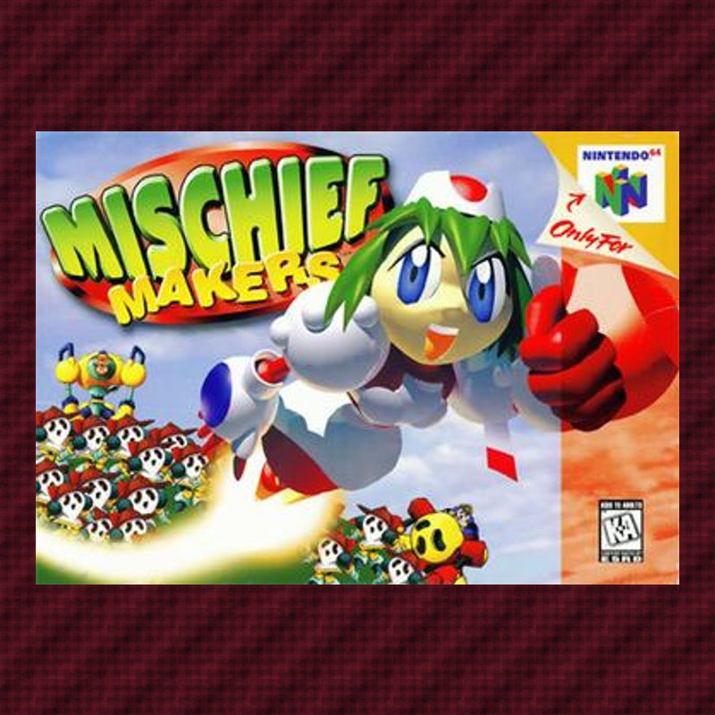
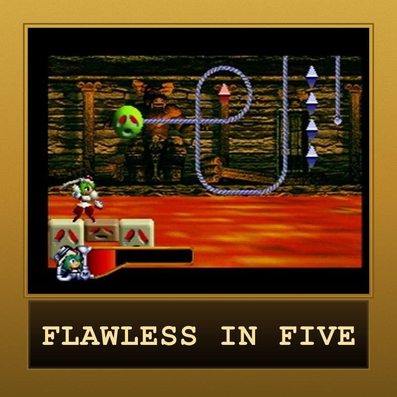
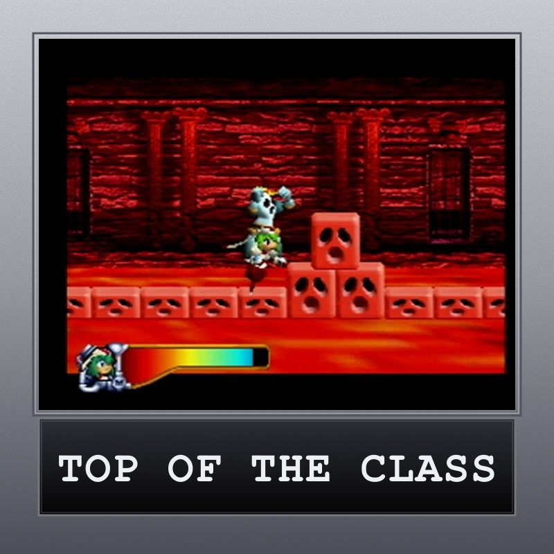
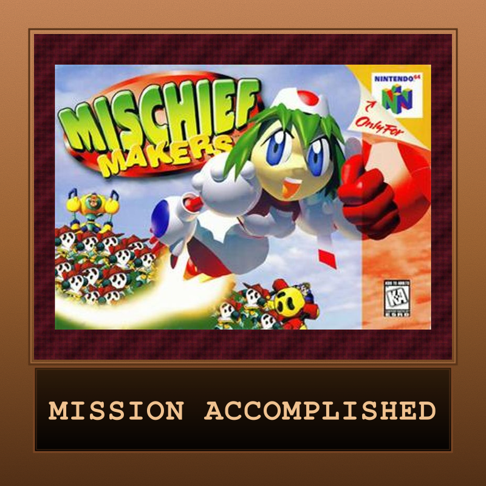

Mischief Makers
Treasure's wild Nintendo 64 debut — and the console's first 2D side-scroller. You play Ultra-InterGalactic-Cybot G Marina Liteyears, grabbing, shaking ("Shake, shake!"), and hurling nearly everything across the planet Clancer to rescue her creator Professor Theo from Emperor Bivi-Dee.

| Platform | Nintendo 64 |
|---|---|
| Genre | 2D Platformer |
| Released | (North America) |
| Developer | Treasure |
| Publisher | Enix (JP) / Nintendo (NA) |
| Available | Nintendo 64 cartridge, Emulation |
How Long to Beat
Community estimate — no formal HLTB entry
Where to Play
About This Game
Developed by Treasure and released by Enix in Japan on June 27, 1997, then by Nintendo in the West that October — Mischief Makers was Treasure's first game on a Nintendo console and the Nintendo 64's first 2D side-scrolling game, built by a small team (~12–15 people) that started in mid-1995 from sparse early-hardware documentation.
You control combat android Marina Liteyears, chasing the villainous Emperor Bivi-Dee across the planet Clancer to rescue her creator, Professor Theo. The signature mechanic is grabbing: nearly every object — enemies, missiles, floating platforms, even hint-giving NPCs — can be seized, shaken ("Shake, shake!") to shake loose items, and thrown. Stages blend side-scrolling with puzzles and frequent boss fights, and a hidden gold gem in each level rewards thorough players with the true ending.
Did You Know?
- Treasure's Nintendo debut — and the N64's first 2D game — a ~12–15 person team began in mid-1995, before the console launched.
- "Shake, shake!" — Marina's grab-and-shake works on almost everything in the game and is the whole toolkit.
- The age screen isn't about you — the 0–99 age you enter at startup is Marina's, and only changes a single frame of the true ending.
- No analog stick, by design — unusually for an N64 game, all movement is on the D-pad.
Critical Reception
Mischief Makers received mixed contemporary reviews but has grown in reputation as a cult classic. Coverage below spans original and retrospective sources.
Club Achievements

S-Class Cybot
Gold
Straight-A Android
Silver
Clancer's Hero
BronzeOther Participants
No participants yet.
Speedrun Records
Mischief Makers has an active speedrunning community on speedrun.com, with runs across multiple categories.
Records via speedrun.com/mischiefmakers.
Soundtrack
Composed by Norio Hanzawa (credited as "NON"), who also scored Treasure's Gunstar Heroes
The score was released in Japan as Yuke Yuke!! Trouble Makers Original Soundtrack (TDK Records, 1997). Notable tracks include "Opening Title" and "Esperance." The full soundtrack can be browsed on VGMdb.
Notable Tracks
- Opening Title (Theme of Trouble Makers)
- Esperance
Track listing and album details via VGMdb (album #3729).
Sources & Attribution
- Game info and plot summary adapted from Wikipedia (Mischief Makers)
- Speedrun records via speedrun.com/mischiefmakers
- Metacritic: metacritic.com/game/mischief-makers/
- Nintendo Life review: nintendolife.com — Mischief Makers Retro review
- Soundtrack via VGMdb (album #3729)
- Box art via Wikipedia